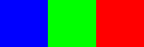
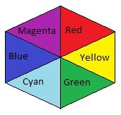
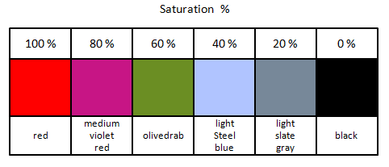
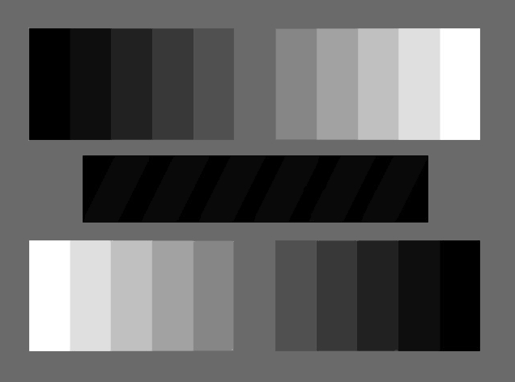

Shakshat Virtual Lab 
INDIAN INSTITUTE OF TECHNOLOGY GUWAHATI
Color Properties
Hue
Hue defines pure colors in terms of red, green or blue. Hue also defines mixtures of two pure colors like red-yellow or yellow-green.
|

|
 |
Tint
A tint is a mixing result of an original color to which has been added white. If you tinted a color, you've been adding white to the original color.

Shade
A shade is a mixing result of an original color to which has been added black. A shade is darker than the original color.
Tone
Tone is result of mixing a pure color with any neutral/grayscale color including the two extremes white and black. By this definition all tints and shades are also considered to be tones.

Lightness or Value = Tone in percentage
Lightness is usually one property of three when used to determine a certain color and measured as percentage value. Lightness defines a range from dark (0%) to fully illuminated (100%).Any original hue has the average lightness level of 50%. Lightness is the range from fully shaded to fully tinted. Value or tone is a measure of how light or dark a color is, without any consideration for its hue.

Saturation or Chroma
Saturation is usually one property of three when used to determine a certain color and measured as percentage value. Saturation defines a range from pure color (100%) to gray (0%) at a constant lightness level. A pure color is fully saturated. Saturation is the purity of a color. The chroma or saturation of a color is a measure of how intense it is. High saturation colors look rich and full. Low saturation colors look dull and grayish.
|  |  |
Intensity / Luminosity
It can be used in conjunction with any color property. Luma (%) is the intensity of the achromatic signal contributing to our color perception.
Brightness / Luminicance
Brightness is an attribute of our perception which is mainly influenced by a color's lightness. For one color of specific hue the perception of brightness is also more intense, if we increase saturation.

Gray Scale
A grayscale is a series of neutral colors, ranging from black to white, or the other way around. Each step's color value is usually shifted by constant amounts.
